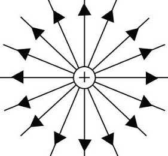
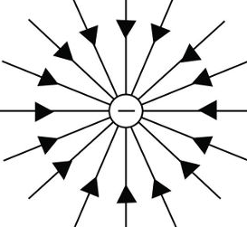
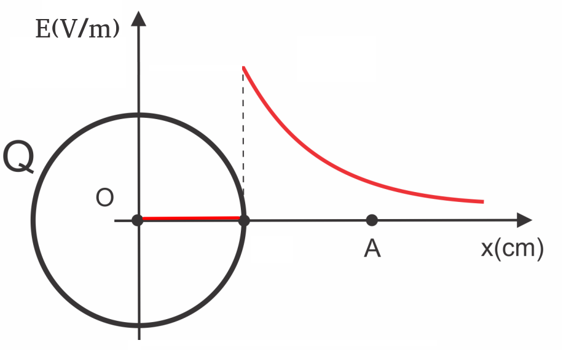
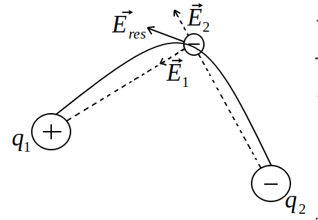
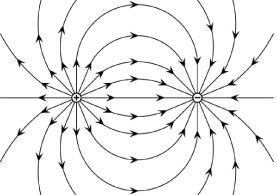
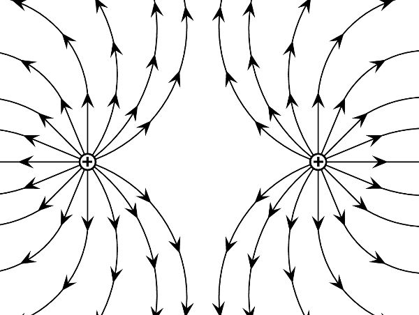
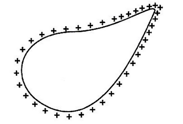
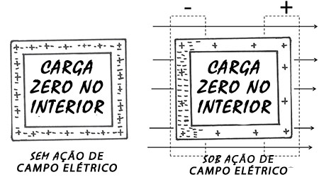

Aula9-74: Campo elétrico e gaiola de Faraday
Campo elétrico para cargas puntiformes
Uma carga A (carga geradora), quando colocada no espaço, modifica esse espaço. Essa modificação só se fará notar quando outra carga, que chamaremos de B (carga de prova), surgir no espaço (o surgimento de B altera novamente o espaço, e essa alteração poderia ser percebida por uma carga C – que não vem ao caso agora). A modificação produzida pela carga A faz com que a carga B sofra uma força de ação a distância: a força elétrica; a essa alteração do espaço damos o nome de campo elétrico.
Obs.: As cargas não geram campos elétricos no ponto em que estão.
|
➔ Se a carga geradora for positiva, é convencionado que as linhas de força emanam dela. |
➔ Se a carga geradora for negativa, é convencionado que as linhas de força a penetram. |
|
|
 |
 |
Ao colocarmos uma carga de prova nas proximidades da carga geradora, passará a existir uma força elétrica entre elas. Observe que, segundo a lei de Coulomb, podemos escrever a intensidade desta força em função da carga de prova:
;
em que E é a intensidade do campo elétrico:
A unidade de medida para campo elétrico no SI é:
Também é muito usado, como unidade de medida, o:
Campo elétrico gerado por carga não puntiforme
Se o campo não for gerado por uma carga puntiforme, não podemos nos servir da fórmula apresentada acima para calculá-lo, pois aquela expressão deriva da lei de Coulomb, que se restringe a cargas puntuais. Para campos gerados por cargas não puntuais, atemo-nos à expressão:
Campo elétrico no interior de um condutor
O campo elétrico no interior de um condutor é nulo. A partir da superfície do condutor, ele cai com o quadrado da distância. |
 |
Princípio da superposição
Sempre que houver mais de uma carga geradora, o campo elétrico atuante na carga de prova será o campo proveniente da soma vetorial das influências individuais das cargas geradoras sobre a carga de prova em questão.

Linhas de força ou linhas de campo
São linhas fictícias, úteis para representar a direção do campo elétrico e da força elétrica. Na verdade, as linhas de força indicam, a cada ponto, a direção do campo elétrico resultante que ali existe.
→ As cargas positivas emanam linhas radiais; as cargas negativas introjetam linhas radiais;
→ As linhas de força nunca se cruzam.
→ O distanciamento entre as linhas é indicador da intensidade do campo elétrico: quanto mais próximas as linhas estiverem, maior é a intensidade do campo naquela região.
|
 |
 |
Poder das pontas
As cargas elétricas de um corpo carregado tendem a se concentrar nas partes pontiagudas, quando o corpo as possui. Essa concentração mais densa de cargas fará surgir na região um campo elétrico também mais intenso. A esse fenômeno damos o nome de poder das pontas. Essa característica geométrica é amplamente aproveitada na indústria, por exemplo, na confecção de para-raios do tipo Franklin.

Gaiola de Faraday
Chamamos de gaiola de Faraday qualquer invólucro constituído de material condutor. Quando temos uma gaiola metálica e a submetemos a um campo elétrico exterior, esse campo fará as cargas se movimentarem na gaiola, polarizando-a; uma vez polarizada, ela produzirá um campo elétrico no seu interior que equilibrará o campo externo, fazendo com que o campo elétrico resultante em seu interior seja nulo.

Em virtude desse fenômeno, explica-se por que aviões, embora constantemente atingidos por raios, não apresentam falhas mecânicas; ou, ainda, por que dispositivos celulares não funcionam dentro de elevadores. A indústria também se beneficia dele, por exemplo, na confecção de para-raios do tipo Faraday.